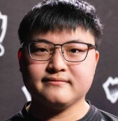

¿Quiénes son los mejores jugadores de eSports del mundo y cuántos años tienen?
Simancas Alexis Actualizado: 23 noviembre 2019 09:34h Mex
A continuación, te contamos quienes son los cinco jugadores más importantes de este gigantesco mercado. Ellos fueron los nominados en la categoría Mejor Jugador del Games Awards 2018.
| Fotografia | Nomb. | Edad | Videojuego | Dinero |
| Sonic Fox |
20 años | Injustice Mortal Kombat X Dragon Ball FighterZ |
Medio millón de dólares solo en premios. | |
|  | Uzi | 21 años | League of Legends | Fichaje de 7,8 millones de dólares pasó a formar parte de Royal Never Give Up. |
| Simple | 21 años | Counter-Strike: Global Ofensive | Más de 1.1 millones dólares en premios. | |
| JJonak | 18 años | Overwatch | 0.7 millones dólares en premios. | |
| Tokido | 33 años | King of Fighters Street Fighter Tekken Marvel vs Capcom BlazBlue |
0.7 millones dólares en premios. |
Las jugadas más memorables de la historia de los esports
Hoy hemos querido rendir homenaje a esos cracks que nos hicieron levantarnos de la silla con jugadas de infarto. Lógicamente no hemos podido meter a todos, así que nos encantaría saber qué otras jugadas memorables tenéis guardadas en vuestras retinas. Ya sabéis que podéis dejarnos vuestra opinión en la zona de comentarios o en nuestras redes sociales.